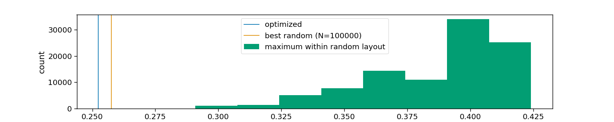
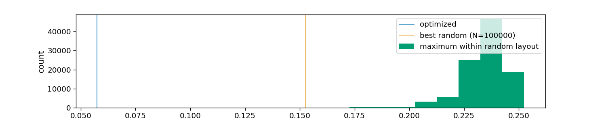
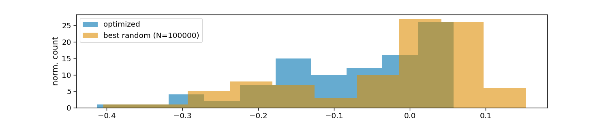

Note
Go to the end to download the full example code.
Stimulus optimization
This script shows how to optimize the stimulus presentation by means of selecting the optimal subset of stimuli from a set of candidate stimuli and how to select an optimal layout to allocate them to a stimulus grid. The methods to optimize such subset and layout were developed and evaluated in [1].
The data used in this script are simulated.
References
import matplotlib.pyplot as plt
import numpy as np
import seaborn as sns
import pyntbci
sns.set_context("paper", font_scale=1.5)
Simulated data
The cell below generated synthetic data. Specifically, we will generate a set of modulated Gold codes and use a convolution with a synthetic flash-VEP to generate simulated EEG template responses.
fs = 120 # Hertz
pr = 60 # Hertz
amplitude = 1.0 # microvolts
width = 0.020 # seconds
latency = 0.100 # seconds
encoding_length = 0.3 # seconds
n_channels = 1
snr = 0.5
# Generate codes
V = pyntbci.stimulus.make_gold_codes()
V = pyntbci.stimulus.modulate(V)
V = V.repeat(int(fs / pr), axis=1)
n_codes, n_samples = V.shape
# Generate structure matrices
M = pyntbci.utilities.encoding_matrix(V[:, np.newaxis, :], int(encoding_length * fs))
# Generate flash-VEP
time = np.arange(0, encoding_length, 1/fs)
r = amplitude * (1 - ((time - latency) / width)**2) * np.exp(-0.5 * ((time - latency) / width)**2)
# Generate template responses
T = r.dot(M.transpose((1, 0, 2)).reshape((-1, n_codes * n_samples))).reshape(n_codes, n_samples)
T /= np.std(T, axis=1, keepdims=True) # normalize amplitudes
Optimize stimulus subset
The cell above generated 63 different codes and for each an expected template EEG response. In the following we assume we have a 4 x 8 matrix speller setup, for a total of 32 classes. Thus, we can select an optimal subset of 32 codes from the 63 available codes. This we will do by minimizing the maximum pair-wise correlation between templates within the subset.
n_random = 100000 # number of random "optimizations"
# Assumed speller matrix
matrix = np.arange(32).reshape(4, 8)
n_classes = matrix.size
# Compute correlation matrix
rho = pyntbci.utilities.correlation(T, T)
rho[np.eye(rho.shape[0]) == 1] = np.nan
# Optimize subset
optimized_subset = pyntbci.stimulus.optimize_subset_clustering(T, n_classes)
optimized = np.nanmax(rho[optimized_subset, :][:, optimized_subset])
optimized_vals = rho[optimized_subset, :][:, optimized_subset].flatten()
optimized_vals = optimized_vals[~np.isnan(optimized_vals)]
# Random subset
random_subset = []
value = 1 # maximum correlation
random = np.zeros(n_random)
for i in range(n_random):
subset_ = np.random.permutation(T.shape[0])[:n_classes]
random[i] = np.nanmax(rho[subset_, :][:, subset_])
if random[i] < value:
random_subset = subset_
value = random[i]
random_vals = rho[random_subset, :][:, random_subset].flatten()
random_vals = random_vals[~np.isnan(random_vals)]
# Visualize tested and optimized layouts
colors = sns.color_palette("colorblind")
plt.figure(figsize=(15, 3))
plt.axvline(optimized, color=colors[0], label="optimized")
plt.axvline(random.min(), color=colors[1], label=f"best random (N={n_random})")
plt.hist(random, color=colors[2], label="maximum within random layout")
plt.legend()
plt.xlabel("maximum correlation across layouts")
plt.ylabel("count")
# Visualize optimized layouts
colors = sns.color_palette("colorblind")
plt.figure(figsize=(15, 3))
plt.hist(optimized_vals, 10, alpha=0.6, color=colors[0], label="optimized")
plt.hist(random_vals, 10, alpha=0.6, color=colors[1], label=f"best random (N={n_random})")
plt.legend()
plt.xlabel("maximum correlation within layouts")
plt.ylabel("norm. count")
- 
Text(135.16666666666669, 0.5, 'norm. count')
Optimize stimulus layout
Now we have the optimal subset of 32 codes. Still, we could optimize how these are allocated to the 4 x 8 speller grid, such that codes that still correlate much are not placed at neighbouring cells in the grid.
# Select optimize subset
T = T[optimized_subset, :]
# Compute correlation matrix
rho = pyntbci.utilities.correlation(T, T)
rho[np.eye(rho.shape[0]) == 1] = np.nan
# Create neighbours matrix assuming 4 x 8 grid
neighbours = pyntbci.utilities.find_neighbours(matrix)
# Optimize layout
optimized_layout = pyntbci.stimulus.optimize_layout_incremental(T, neighbours, 50, 50)
optimized = np.nanmax(rho[optimized_layout[neighbours[:, 0]], optimized_layout[neighbours[:, 1]]])
optimized_vals = rho[optimized_layout[neighbours[:, 0]], optimized_layout[neighbours[:, 1]]].flatten()
optimized_vals = optimized_vals[~np.isnan(optimized_vals)]
# Random layout
random_layout = []
value = 1 # maximum correlation
random = np.zeros(n_random)
for i in range(n_random):
layout_ = np.random.permutation(T.shape[0])
random[i] = np.nanmax(rho[layout_[neighbours[:, 0]], layout_[neighbours[:, 1]]])
if random[i] < value:
random_layout = layout_
value = random[i]
random_vals = rho[random_layout[neighbours[:, 0]], random_layout[neighbours[:, 1]]].flatten()
random_vals = random_vals[~np.isnan(random_vals)]
# Visualize tested and optimized layouts
colors = sns.color_palette("colorblind")
plt.figure(figsize=(15, 3))
plt.axvline(optimized, color=colors[0], label="optimized")
plt.axvline(random.min(), color=colors[1], label=f"best random (N={n_random})")
plt.hist(random, color=colors[2], label="maximum within random layout")
plt.legend()
plt.xlabel("maximum correlation across layouts")
plt.ylabel("count")
# Visualize optimized layouts
colors = sns.color_palette("colorblind")
plt.figure(figsize=(15, 3))
plt.hist(optimized_vals, 10, alpha=0.6, color=colors[0], label="optimized")
plt.hist(random_vals, 10, alpha=0.6, color=colors[1], label=f"best random (N={n_random})")
plt.legend()
plt.xlabel("maximum correlation within layouts")
plt.ylabel("norm. count")
# plt.show()
- 
- 
Text(146.91666666666669, 0.5, 'norm. count')
Total running time of the script: (0 minutes 3.593 seconds)